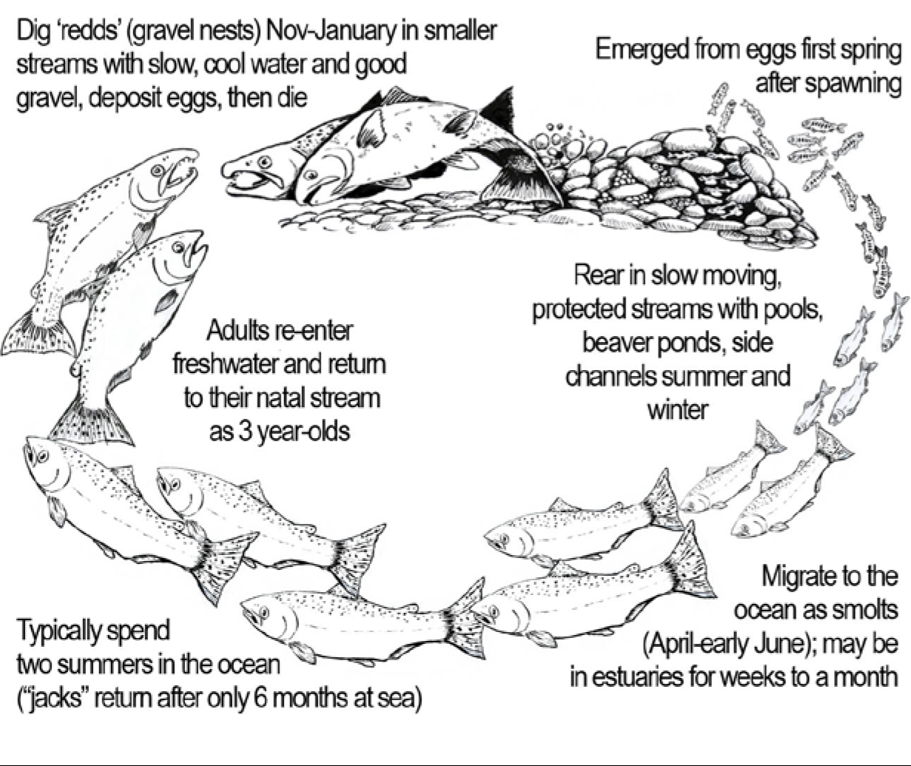
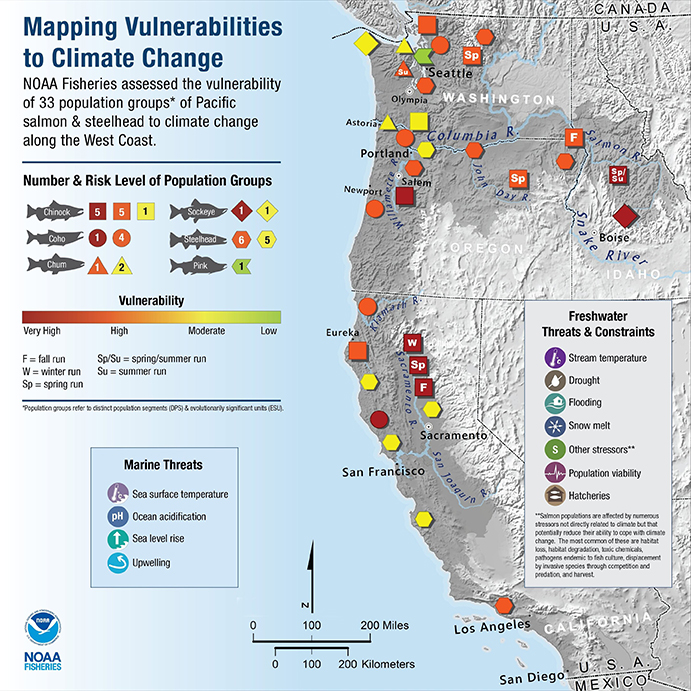

Climate change is impacting salmon and the Upper Nehalem Watershed Council (UNWC) wants the Nehalem River to be a safe haven for this important fish. For that to happen, much more work needs to be done

Fall is here and the salmon have returned to Vernonia. While we are carving pumpkins, picking apples, and stacking firewood, the salmon in our streams are using their last reserves of strength to spawn. Their life cycle is familiar to most of us: eggs in gravel spawning beds become tiny fry darting to and fro, which eventually become smolts on their way to the salty ocean. There the young fish grow large and when sexually mature they begin the long journey back to the freshwater they hatched in to spawn.
Each stage of this journey has been impacted by human activities and salmon runs have steadily declined since the arrival of European settlers. Overfishing, logging, agriculture, dam construction, and water diversion have all taken their toll on salmon populations. Although no one knows how many fish returned from the sea prior to the 1950s, anecdotes exist that give clues to the abundance of salmon. In one pioneer story told in “Vernonia, A Pocket in the Woods,” salmon runs were described as “…so plentiful in the fall that their slippery bodies flopped onto the banks of the rivers and creeks.” We do not describe modern salmon runs this way.
The Nehalem watershed is home to many species of fish including summer and fall Chinook, Coho, and Winter Steelhead to name a few. Coho in the Oregon
Coast region are listed as threatened under the Endangered Species Act (ESA) and Chinook are considered threatened or endangered all along the western coast of the US. Even with the ESA listing and a lot of hard work to research salmon, rebuild habitat, and remove barriers, salmon run numbers remain inconsistent in many areas. Some years are better than others.Fluctuations in salmon returns is caused by many factors. The journey from spawning bed to the sea is long and difficult, with many dangers. Some salmon live in the ocean for four or five years before returning to their natal streams and a lot can go wrong in that time.
Imagine a redd of eggs nestled in the stream. It can take 1-3 months, helpless in the gravel, for alevins to develop. Flooding, low oxygen, and predators can wipe out many eggs before they get anywhere. As alevins, with their little yoke sacs for sustenance, they must stay hidden for 1-5 months and hope not to get cooked by high summer stream temperatures. When they grow into fry and emerge from the gravel they must feed themselves without being fed upon. If they survive, they become slightly bigger parr, and then smolts, making their way to the estuaries. The entire juvenile rearing process requires slower moving, clear, cool streams with side channels, pools and ponds, root wads and shade, and the vegetation that supports the insect life they feed upon. Even with all such components in place, the journey is dangerous, but without them, it is nearly impossible.
Image from National Oceanic and Atmospheric Administration, 2019
Unfavorable marine conditions is another major reason why salmon returns can vary wildly. Once the young fish enter the sea they encounter new challenges like acidification impacting food sources and a whole host of new predators. Changes in atmospheric pressure, climate, and water temperature can sometimes be favorable to the fish and sometimes not. It is estimated that only 1% or less of adult fish survive to return and spawn.
Because the salmon life cycle is already complex and difficult, the UNWC believes we need to ensure the home waters and natal streams are in the best possible shape for returning salmon. There are several ways to do this.
First, we must rebuild habitat for juvenile fish. As mentioned, they need stream complexity, which means side channels, pools, ponds, fallen trees with root wads, and gravel. I say “rebuild” because much stream complexity was removed by humans in the past who believed they were clearing the way for salmon migration or beautifying waterways. By installing more large woody debris structures, encouraging beaver activity, and planting more trees in riparian areas we can begin to amend past watershed management mistakes.
Second, we must continue to remove barriers to fish passage. Small culverts, dams, old or broken fish ladders, and other barriers can block fish from reaching the higher streams and spawning beds. They must be replaced with more functional structures that do not hinder returning fish.
Next, we can each conserve water at home during the summer. Water diversion for human uses means there is less water available for aquatic life. Water curtailment plans and instream water rights help address this issue, but awareness of our fresh water resources and how to use them efficiently is vitally important.
Finally, we must increase protections on forests, waterways, and riparian areas to ensure they can persist for the coming centuries. That means supporting changes to existing laws, even if it means enduring discomfort in the transition. Nature is resilient, but it can take much longer than a human lifespan for it to rebound. Because of this, a respect for nature’s processes must be built into our laws and culture if our work is to persist beyond our own lifetime.
These projects all take time, money, and effort to implement. Enter the community. You and I can help by donating towards a specific project, planting trees, educating ourselves about local and global environment issues, volunteering at a native plant nursery or becoming a UNWC board member.
The Upper Nehalem Watershed Council currently needs someone who has experience with and enjoys fundraising. Have you organized a successful fundraiser? Do you have grant writing experience? We need you to volunteer. We want to grow our organization into one that can tackle more projects and employ more people and to do that we need more funding.
If you are interested in helping us rise to meet the climate challenges of the coming years, contact UNWC Executive Director Maggie Peyton by phone at (503) 429-0869 or by email at maggie@nehalem.org. Visit us at unwc.nehalem.org.